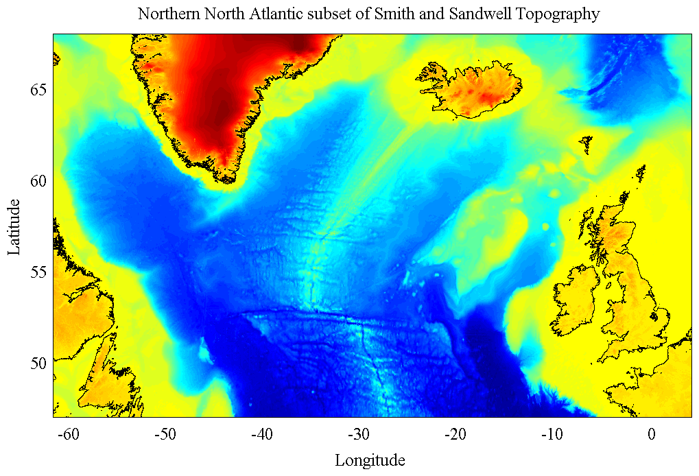

READTOPO Read one-minute topography data from Smith and Sandwell.
_______________________________________________________________________

_______________________________________________________________________
[TOPO,LAT,LON]=READTOPO(REGION) extracts regional topography from the
the one-minute Smith and Sandwell global database version 18.1. This
file is included with JDATA, available from at http://www.jmlilly.net.
REGION is an array of the form REGION=[WEST EAST SOUTH NORTH] which
indicates the *edges* of the desired domain. Longitudes can be
specified either on the interval [0,360] or the interval [-180,180].
The region may overlap the prime meridian or the dateline. Region
boundaries are interpreted to exclude the poles.
TOPO is a matrix of topography in units of kilometers and is positive
for above sea level, and negative for below sea level.
LON is a row vector of longitudes and LAT a column vector of latitudes.
LAT and LON output by READTOPO are *grid-centered*, that is, they
indicate midpoints of the topography cells. LON is uniformly spaced,
but LAT is non-uniformly spaced, with bin sizes decreasing poleward.
Note that the Smith and Sandwell database is defined only for latitudes
between -80.738 and 80.738.
__________________________________________________________________
Interpolation
[TOPO,LAT,LON]=READTOPO(REGION,DLAT,DLON) optionally linearly
interpolates the one-minute (1/60 degree) topographic data to a
different resolution, specified by DLAT and DLON, in degrees.
READTOPO(REGION,DLAT) with DLON omitted sets DLON=DLAT.
This is useful for interpolating the high-resolution Smith and Sandwell
dataset to a coarser resolution.
__________________________________________________________________
Alternate path
By default, READTOPO looks for the topography file topo_18.1.img in
the JLAB directory.
[TOPO,LAT,LON]=READTOPO(DIRNAME,REGION...) alternatively specifies
DIRNAME as the path to the parent directory of the file topo_18.1.img.
__________________________________________________________________
Data and documentation
The original location for the Smith and Sandwell Global Topography
Dataset v. 18.1, file 'topo_18.1.img' is
http://topex.ucsd.edu/WWW_html/mar_topo.html.
The reference for the Smith and Sandwell Database is
Smith, W. H. F., and D. T. Sandwell, Global seafloor topography
from satellite altimetry and ship TOPO soundings, Science, v. 277,
p. 1957-1962, 26 Sept., 1997.
__________________________________________________________________
License and Copyright
The data file topo_18.1.img is distributed with JDATA for RESEARCH AND
NON-PROFIT USE ONLY, in accordance with the copyright statement for the
Smith and Sandwell dataset. For details, type 'help topo_copyright'.
You are free to use and redistribute READTOPO under the terms in the
JLAB license, http://www.jmlilly.net/doc/jlab/jlab_license.html.
READTOPO is self-contained, although tests and sample figure require
JLAB to run. JLAB is available from http://www.jmlilly.net.
Send comments, questions, and bug reports to 'eponym@jmlilly.net'.
__________________________________________________________________
See also JTOPO, REGIONPLOT, and TOPOPLOT in JLAB.
'readtopo --f' generates the sample figure shown above.
'readtopo --t' runs some tests.
Usage: [topo,lat,lon]=readtopo([west east south north]);
[topo,lat,lon]=readtopo(dirname,[west east south north]);
__________________________________________________________________
This is part of JLAB --- type 'help jlab' for more information
(C) 2006--2015 J.M. Lilly --- type 'help jlab_license' for details